Engenharia de Software
Modelos de Processos de Software
Professor: Gabriel Soares Baptista
Introdução
O que é um Processo de Software?
- É um conjunto coerente de atividades para transformar uma necessidade abstrata em um produto funcional.
- Funciona como um roteiro mestre que guia a equipe desde a ideia inicial até a manutenção.
- Essencial para que o software seja:
- Robusto.
- Gerenciável.
- Economicamente viável.
- Alinhado às necessidades do cliente.
Atividades Fundamentais
Independentemente do modelo, todos os processos compartilham quatro atividades básicas:
- Especificação: Definição do que o sistema deve fazer e suas restrições.
- Projeto e Implementação: Arquitetura do sistema e construção efetiva.
- Validação: Garantia de que o software atende ao pedido do cliente e foi construído corretamente.
- Evolução: Adaptação do software às novas demandas do mercado e realidade.
Estas atividades não são isoladas; elas possuem subatividades e coexistem com atividades de apoio, como documentação e gerência de configuração.
Descrição de um Processo
Para descrever um processo de forma robusta, incluímos:
- Produtos (Artefatos): Resultados tangíveis (ex: modelo de arquitetura).
- Papéis: Responsabilidades das pessoas (ex: gerente de projeto, programador).
- Pré e pós-condições: Declarações que devem ser verdadeiras antes e depois de uma atividade.
- Pré-condição: Requisitos aprovados pelo cliente.
- Pós-condição: Modelos UML revisados.
Modelos de Processo de Software
- São representações simplificadas ou abstrações de um processo real.
- Funcionam como frameworks conceituais adaptáveis.
Paradigmas de Desenvolvimento
- Modelo em Cascata: Dirigido a planos, atividades sequenciais.
- Desenvolvimento Incremental: Atividades intercaladas, feedback rápido.
- Engenharia Orientada a Reúso: Foco na integração de componentes existentes.
Em sistemas de grande porte, é comum combinar a previsibilidade da Cascata para a arquitetura com a flexibilidade do Incremental para interfaces.
O Modelo em Cascata (Waterfall)
- Derivado da engenharia de sistemas (Royce, 1970).
- Sequencial: Uma fase alimenta a próxima.
- Dirigido a planos: Exige planejamento e programação total prévia.
- Desafio: Inflexibilidade diante de mudanças de requisitos.
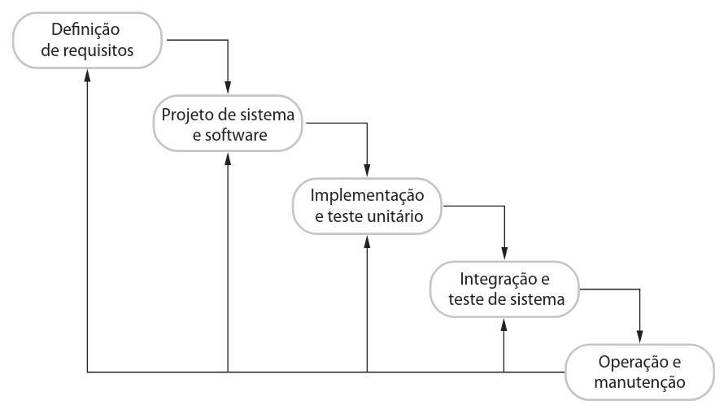
Desenvolvimento Incremental
- Criação de versões iniciais expostas ao feedback do usuário.
- Atividades de especificação, desenvolvimento e validação são intercaladas.
- Vantagens:
- Redução do custo de mudanças.
- Feedback rápido do cliente.
- Entrega antecipada de valor.
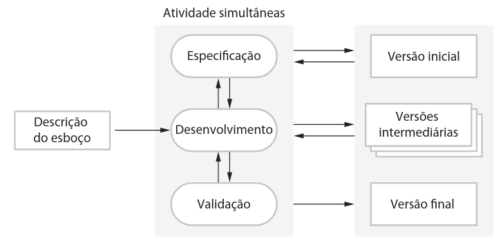
Engenharia Orientada a Reúso
Focada na capitalização de componentes existentes (Web services, frameworks, COTS).
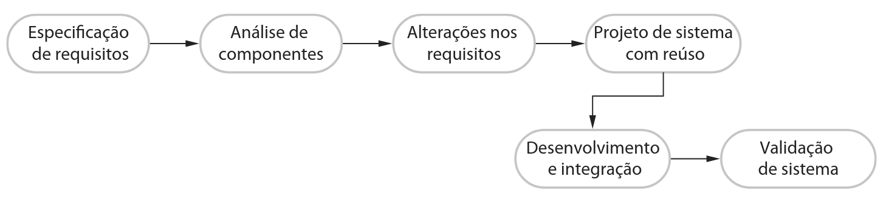
- Compromissos: Os requisitos muitas vezes precisam ser alterados para se adequarem aos componentes disponíveis.
- Vantagem: Redução de custos e tempo de entrega.
- Desvantagem: Perda de controle sobre a evolução (dependência de terceiros).
Questões de fixação - 1
1. Justificando sua resposta com base no tipo de sistema a ser desenvolvido, sugira o modelo genérico de processo de software mais adequado para ser usado como base para a gerência do desenvolvimento dos sistemas a seguir:
- Um sistema para controlar o antibloqueio de frenagem de um carro.
- Um sistema de realidade virtual para dar apoio à manutenção de software.
- Um sistema de contabilidade para uma universidade, que substitua um sistema já existente.
- Um sistema interativo de planejamento de viagens que ajude os usuários a planejar viagens com menor impacto ambiental.
2. Explique por que o desenvolvimento incremental é o método mais eficaz para o desenvolvimento de sistemas de software de negócios. Por que esse modelo é menos adequado para a engenharia de sistemas de tempo real?
3. Considere o modelo de processo baseado em reúso. Explique por que, nesse processo, é essencial ter duas atividades distintas de engenharia de requisitos.
Especificação de Software
O processo de compreender e definir os serviços e restrições do sistema.
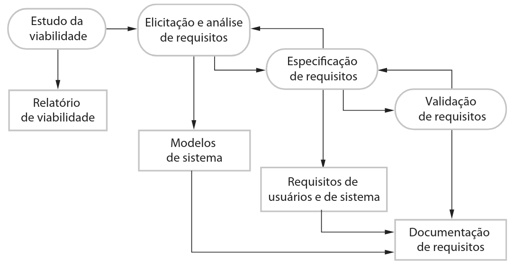
- Estudo de Viabilidade: Decisão técnica e financeira.
- Elicitação e Análise: Derivação dos requisitos com stakeholders.
- Especificação: Documento formal (usuário e sistema).
- Validação: Checagem de consistência e realismo.
Projeto e Implementação
Conversão da especificação em um sistema executável.
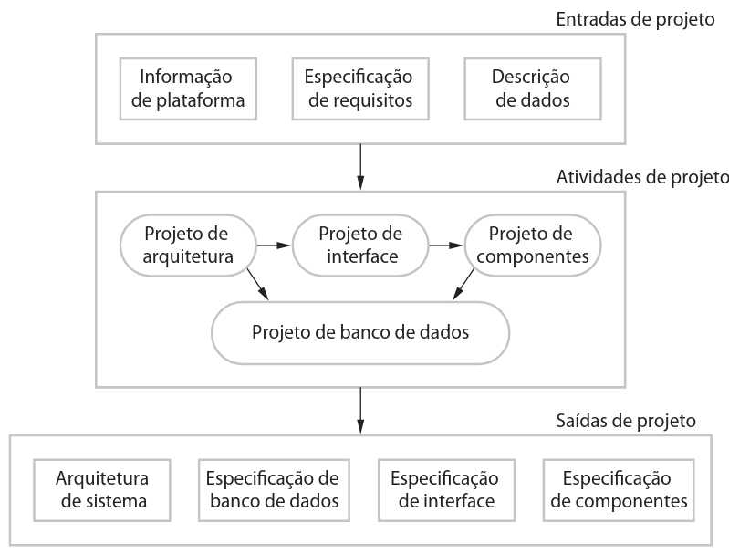
- Projeto de Arquitetura: Estrutura global e subsistemas.
- Projeto de Interface: Especificações para desenvolvimento independente.
- Projeto de Componente: Detalhamento do funcionamento interno.
- Projeto de Banco de Dados: Estruturação da representação de dados.
Validação de Software
Demonstrar que o software atende às especificações e às necessidades do cliente.
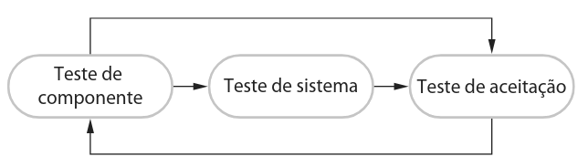
- Testes de Desenvolvimento: Foco em componentes individuais (funções/classes).
- Testes de Sistema: Foco em erros de interface e requisitos funcionais/não funcionais.
- Testes de Aceitação: Teste final com dados reais do cliente.
O Modelo V e Testes de Entrega
Em processos dirigidos a planos, os testes são guiados por planos que ligam as fases de especificação às fases de teste correspondentes.
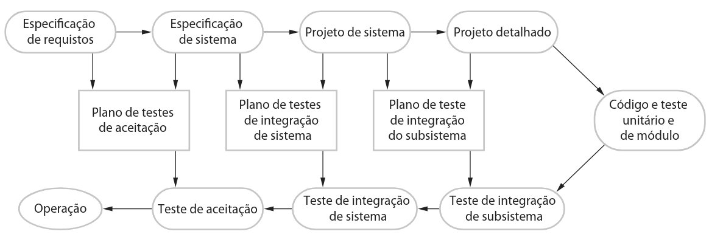
- Teste Alfa: Realizado para sistemas sob encomenda até o aceite do cliente.
- Teste Beta: Liberação para um grupo de usuários potenciais em produtos de mercado.
Evolução de Software
O software deve ser encarado como um organismo vivo, não apenas "manutenção".
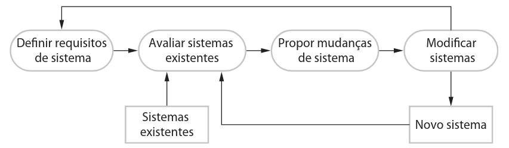
- Historicamente, separava-se "desenvolvimento" (criativo) de "manutenção" (correção).
- Realidade: Poucos sistemas são construídos do zero; a evolução é um processo contínuo e caro.
Questões de fixação - 2
4. Sugira por que é importante, no processo de engenharia de requisitos, fazer uma distinção entre desenvolvimento dos requisitos do usuário e desenvolvimento de requisitos de sistema.
5. Descreva as principais atividades do processo de projeto de software e as saídas dessas atividades. Usando um diagrama (ou descrição visual), mostre as possíveis relações entre as saídas dessas atividades.
6. Explique por que, em sistemas complexos, as mudanças são inevitáveis. Exemplifique as atividades de processo de software que ajudam a prever as mudanças e fazer com que o software seja desenvolvido mais tolerante a mudanças (nesta resposta, desconsidere a prototipação e a entrega incremental).
7. Explique por que os sistemas desenvolvidos como protótipos normalmente não devem ser usados como sistemas de produção.
Lidando com Mudanças
Mudanças geram retrabalho, elevando os custos.
Abordagens de Mitigação
- Prevenção de Mudanças: Antecipar alterações antes de gastos elevados (ex: prototipação).
- Tolerância a Mudanças: Projetar o processo para acomodar alterações a baixo custo (ex: entrega incremental).
Desenvolvimento Incremental: Ciclo de desenvolvimento para feedback.
Entrega Incremental: O cliente recebe e utiliza partes do sistema em seu ambiente real.
Prototipação
Versão inicial para demonstrar conceitos e validar requisitos.
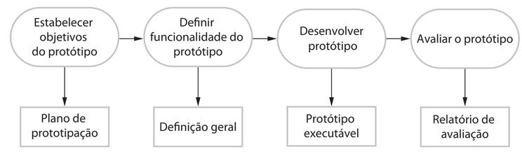
- Foco: Elicitação de requisitos e design de interfaces.
- Desenvolvimento Rápido: Relaxa-se requisitos não funcionais (desempenho, robustez).
- Perigo: Pressão gerencial para transformar um protótipo descartável no sistema final.
O Modelo Espiral de Boehm
Framework dirigido a riscos.
- Objetivos: Metas, restrições e riscos.
- Avaliação de Riscos: Prototipação para mitigar incertezas.
- Desenvolvimento: Escolha dinâmica do modelo conforme o risco.
- Planejamento: Revisão para o próximo ciclo.
O Modelo Espiral de Boehm
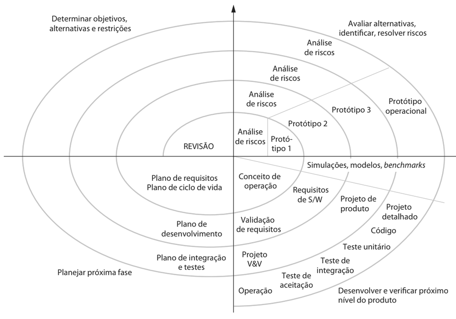
Rational Unified Process (RUP)
Modelo moderno e híbrido derivado da UML.
Perspectiva Dinâmica (Fases)
- Concepção: Viabilidade e business case.
- Elaboração: Arquitetura base e mitigação de riscos.
- Construção: Projeto detalhado, programação e integração.
- Transição: Transferência para o ambiente real do usuário.
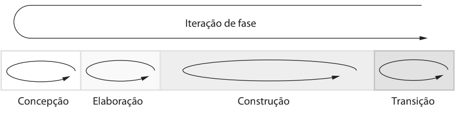
Perspectivas do RUP
- Estática (Workflows): Atividades técnicas (Requisitos, Implementação, etc.) que ocorrem em todas as fases com intensidades diferentes.
- Prática (Boas Práticas):
- Desenvolvimento iterativo.
- Gerenciamento de requisitos.
- Arquiteturas baseadas em componentes.
- Modelagem visual (UML).
- Verificação contínua da qualidade.
- Controle de mudanças (Configuração).
Questões de fixação - 3
8. Explique por que o modelo em espiral de Boehm é um modelo adaptável, que apoia tanto as atividades de prevenção de mudanças quanto as de tolerância a mudanças. Na prática, esse modelo não tem sido amplamente usado. Sugira as possíveis razões para isso.
9. Quais são as vantagens de proporcionar visões estáticas e dinâmicas do processo de software, assim como no Rational Unified Process (RUP)?
10. Historicamente, a introdução de tecnologia provocou mudanças profundas no mercado de trabalho. Discuta se a introdução da automação extensiva em processos pode vir a ter as mesmas consequências para os engenheiros de software. Se sua resposta for não, justifique. Se você acha que sim, que vai reduzir as oportunidades de emprego, é ética a resistência passiva ou ativa, pelos engenheiros afetados, à introdução dessa tecnologia?
Próximos Passos
Desenvolvimento Ágil: Scrum e XP
- Veremos como lidar com a rápida mudança nos requisitos.
- Exploraremos o funcionamento de metodologias que rompem com a rigidez tradicional.
- Scrum e Extreme Programming (XP): Entrega contínua de valor e colaboração intensa.